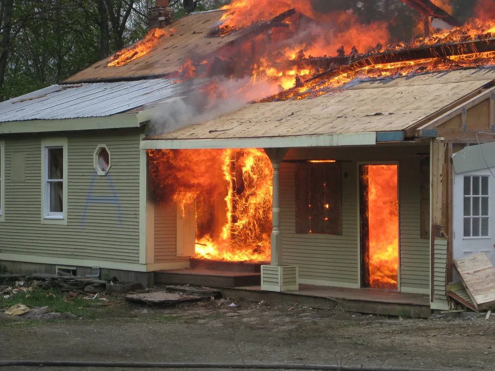
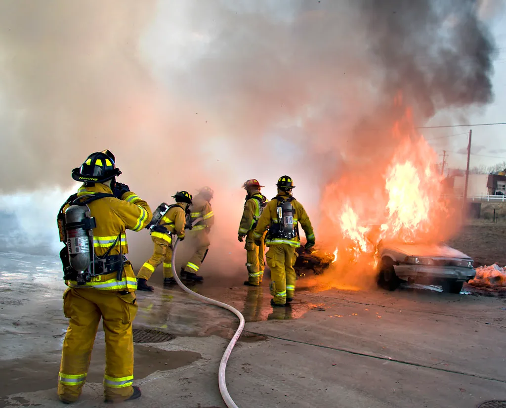

'역삼동 연쇄방화' 70대 구속영장…범행 대체로 시인, 살인미수도 검토
서울 강남구 역삼동에서 특허법인이 입주한 건물 두 곳에 잇따라 불을 지른 70대 남성에 대해 경찰이 구속영장을 신청했다. 서울서초경찰서는 지난 20일 신명빌딩 3층과 인근 한양빌딩 4층에서 7분 간격으로 불을 낸 혐의로 해당 남성을 입건해 조사한 뒤, 현존건조물방화치상 혐의로 구속영장을 신청했다고 밝혔다. 두 건물은 200~300미터 거리에 있으며, 화재로 5명이 중상을, 14명이 경상을 입어 모두 19명의 사상자가 발생했다. 서로 다른 두 건물에서 짧은 시간 간격을 두고 불이 난 만큼, 사건 초기에는 단순 화재가 아니라 계획적인 연쇄 범행일 가능성이 제기되며 경찰이 긴급히 수사에 착수했다.
경찰에 따르면 이 남성은 20일 밤 진행된 1차 피의자 조사에서 범행 사실을 대체로 시인했다. 그는 해당 특허법인들이 자신에게 허위 특허등록증을 발급하는 등 사기를 쳤다고 주장하며, 특허법인 관계자들에게 겁을 주고 자신이 입었다고 생각하는 피해를 세상에 알리고 싶었다는 취지로 진술한 것으로 전해졌다. 그는 범행 사흘 전부터 미리 준비를 해왔다고도 진술했다.

경찰 수사 결과 이 남성은 범행에 앞서 특허법인 직원에게 특정 관리자급 직원의 근무 위치를 구체적으로 물어본 사실도 확인됐다. 그는 해당 관리자의 이름을 언급하며 어디서 근무하는지 캐물은 뒤, 건물 출입구에 인화성 물질을 뿌리는 방식으로 불을 질렀다. 이웃 주민에게는 범행 전 "죽여버리겠다"는 취지의 발언을 한 사실도 드러나, 단순 우발적 범행이 아니라 특정 대상을 겨냥한 계획적 범행일 가능성이 제기되고 있다.
경찰은 이런 정황을 토대로 단순 방화치상을 넘어 살인미수 혐의를 적용할 수 있는지도 함께 검토하고 있다. 피해자를 특정해 위치를 캐물은 점, 인화성 물질을 사용해 건물 내부에 불을 지른 점 등이 살해 의도를 뒷받침하는 정황으로 작용할 수 있다는 판단이다. 다만 혐의 적용 여부는 추가 조사와 법리 검토를 거쳐 최종 결정될 예정이다.

이번 사건에서 더욱 주목되는 부분은 이 남성이 4년 전에도 같은 건물에 방화를 시도한 전력이 있다는 사실이다. 당시에도 특허 관련 분쟁으로 비롯된 불만이 범행 동기였던 것으로 알려지면서, 오랜 기간 누적된 갈등이 결국 대규모 인명피해로 이어졌다는 지적이 나온다. 경찰은 과거 방화 시도 당시의 처리 경위와 이번 사건의 연관성도 함께 들여다보고 있는 것으로 전해졌다.
사건 발생 당시 두 건물에서는 소방당국이 긴급 출동해 화재를 진화하고 부상자들을 인근 병원으로 옮겼다. 역삼동 일대는 특허법인과 사무실이 밀집한 지역으로, 평일 업무시간에 발생한 화재여서 자칫 대규모 인명피해로 이어질 뻔했다는 지적도 나온다. 인근 상가와 사무실 종사자들 사이에서는 한동안 불안감이 이어졌던 것으로 전해졌다.
경찰은 구속영장 실질심사 결과에 따라 신병 확보 여부를 결정하고, 이후 추가 조사를 거쳐 사건을 검찰에 송치할 방침이다. 특허 분쟁이나 금전 관련 갈등이 보복성 범죄로 번지는 사례가 반복되고 있다는 점에서, 이번 사건을 계기로 유사 민원·분쟁 상담 과정에서의 위험 신호를 조기에 포착할 수 있는 체계가 필요하다는 목소리도 나오고 있다. 4년 전 방화 시도 당시 피의자에 대한 조치가 어떠했는지를 둘러싼 재조사 필요성도 함께 제기되는 상황이다.